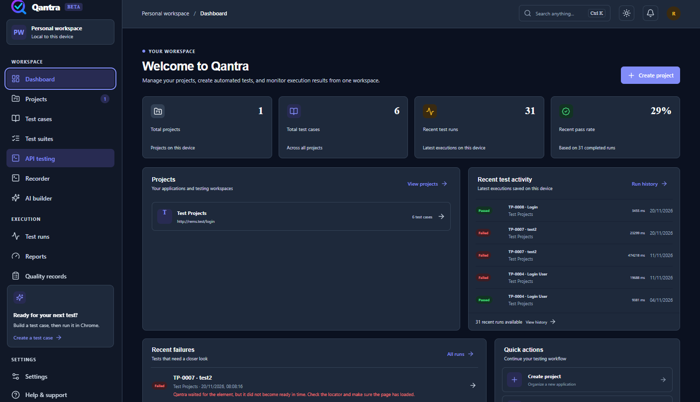
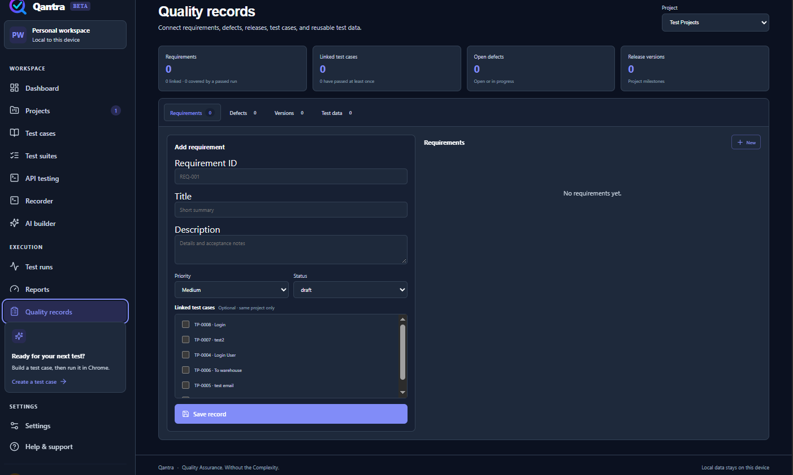

⌘
API testing
Send GET, POST, PUT, PATCH, and DELETE requests. Validate status codes, JSON fields, and response content.
Bring API testing, browser automation, test cases, quality records, execution history, and Playwright export together in one local-first QA workspace.

Designed for solo testers and growing QA workflows. Build tests, inspect results, and keep track of quality without jumping between disconnected tools.
Send GET, POST, PUT, PATCH, and DELETE requests. Validate status codes, JSON fields, and response content.
Organize browser test cases, record interactions, and review automated execution outcomes.
Export browser test steps as standalone Playwright JavaScript for execution outside Quantra.
Keep scenarios organized by project and bring related checks together in structured suites.
Inspect previous runs, assertion outcomes, HTTP responses, and test durations.
Track requirements, defects, release versions, and reusable test data. Link requirements to relevant test cases.
Keep projects and saved test requests on your device. Online endpoints still require connectivity.
Quantra can export browser steps as Playwright code, so you can inspect, adapt, and run your automation from a Node.js project.
import { chromium } from 'playwright';
const browser = await chromium.launch({
channel: 'chrome',
headless: false
});
const page = await browser.newPage();
await page.goto('http://localhost/login');
// Add your recorded test steps here.
await browser.close();Keep the context behind your tests in one project workspace. Quantra’s Quality Records screen brings requirements, defects, release versions, and test data together, with links between requirements and test cases.

Document requirements with IDs, descriptions, priorities, statuses, and linked test cases.
Keep track of issues alongside the testing work they affect.
Organize quality records around project releases and milestones.
Keep test data records accessible within the project workspace.
Preview from the Quantra desktop application. Features are under ongoing beta validation.
Quantra is currently being prepared for public distribution. This website does not offer an installer until a release has been validated and published.
The personal workspace is designed around local storage. Testing websites or API endpoints on the internet still requires a connection.
Yes. Standalone JavaScript exports have been manually exercised with Node.js and Playwright. The target application and required dependencies must be available.
Quantra is being developed for both individual testers and wider distribution. Collaboration features are a future direction, not a promised current capability.
Quantra is in beta. The Windows download will appear here once the installer and release checks are ready. No misleading or inactive download buttons.
Explore what Quantra can do